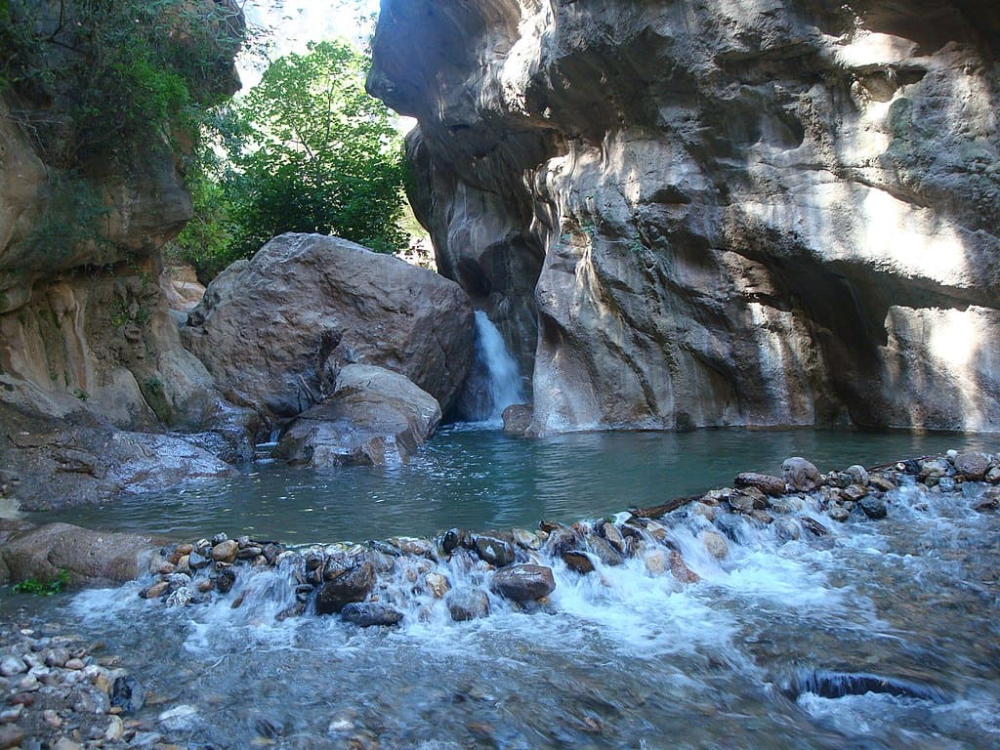
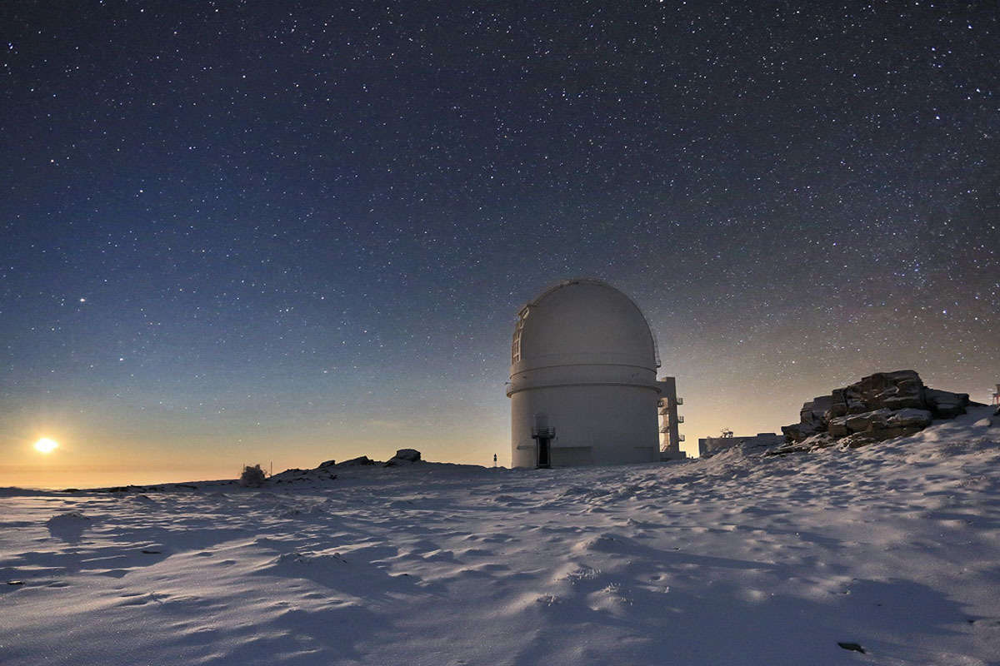

Lugares más escondidos de Almería
Sitios para visitar
Lugares menos turísticos
Baños de Sierra Alhamilla
Sierra Alhamilla (o Los Baños de Sierra Alhamilla) es una localidad y pedanía española perteneciente al municipio de Pechina, en la provincia de Almería. Recibe el nombre de Baños de Sierra de Alhamilla debido al nacimiento de aguas termales y a los baños que se surten de dicha fuente. El agua brota de la misma roca a unos 58 °C y procede de un acuífero carbonatado
Los Canales de Padules
La árida región de Almería también depara oasis increíbles. Uno de ellos es, sin duda, el conocido como los Canales de Padules. Pozas, cañones, recovecos caprichosos y cantarines saltos de agua es lo que ofrece el río Andarax a su paso por el municipio de Padules.

Calar Alto
El Observatorio de Calar Alto es el observatorio astronómico más grande del continente europeo. Desde 2019, su nombre oficial es Centro Astronómico Hispano en Andalucía (CAHA). Hasta 2018, era el Centro Astronómico Hispano-Alemán.
